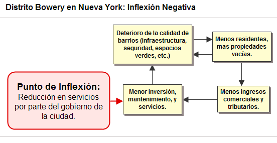
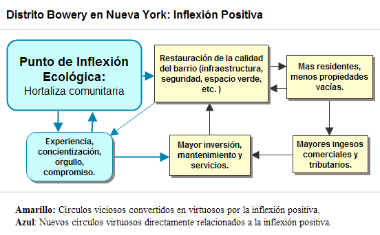
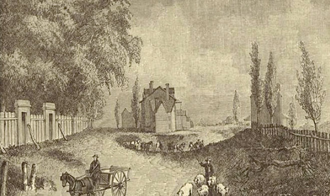
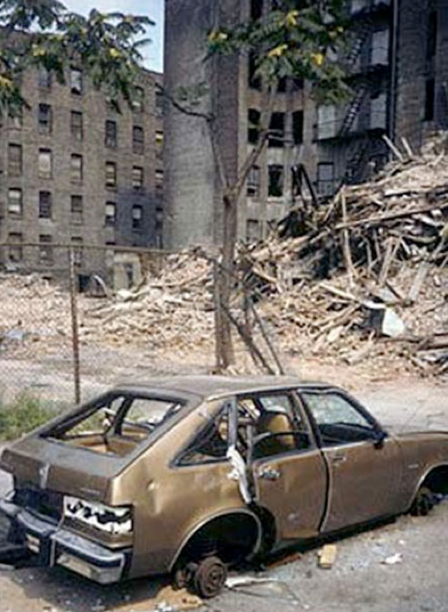
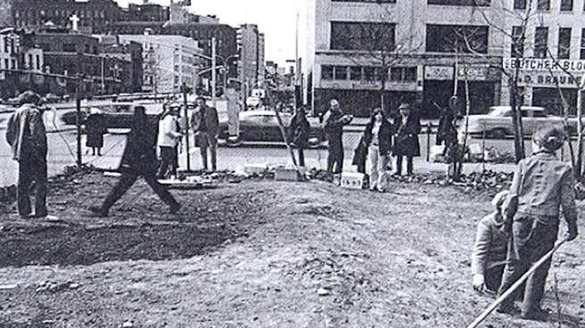
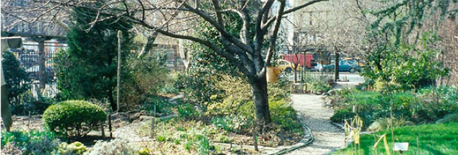
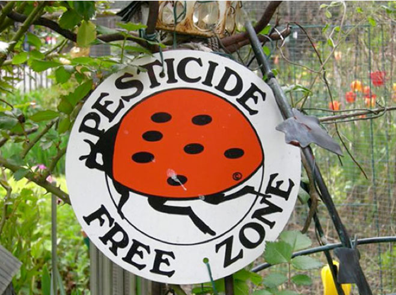
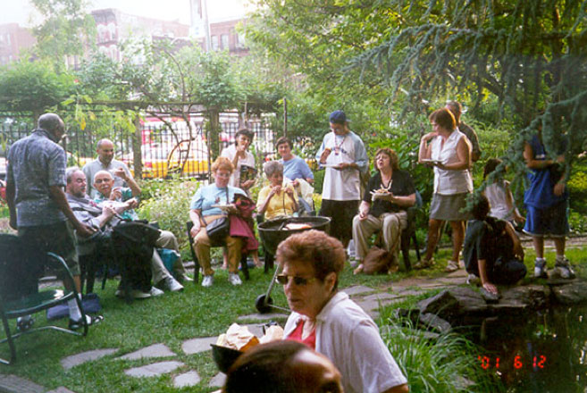
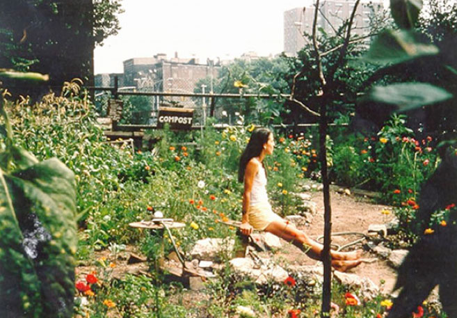
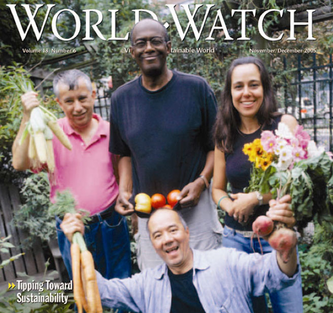

|
 |
 |
Puntos de
Inflexión Ecológica
- Cómo funcionan?
- Transformando círculos viciosos a círculos virtuosos
- Ingredientes para el éxito
- Elaboren sus propios Puntos de Inflexión Ecológica
Historias por Región
Historias por Tema
- Agricultura
- Agua y Cuencas
- Bosques
- Ecosistemas Urbanos
- Educación
- Energía
- Negocios
- Pesquerías
- Salud Pública
Videos Cortos
- Salvando un arrecife coral y una pesquería
(Filipinas) - Revitalizando vecindades urbanas con jardines comunitarios
(Nueva York) - Revirtiendo la deforestación tropical con bosques comunitarios
(Thailandia) - Rellenando aguas subterráneas con captación pluvial
(Rajastán, India) - Escapando la trampa de pesticidas
(India)
Explicando el Éxito
- Salvando un arrecife coral y una pesquería
(Filipinas) - Revitalizando vecindades urbanas con jardines comunitarios
(Nueva York) - Revirtiendo la deforestación tropical con bosques comunitarios
(Thailandia) - Rellenando aguas subterráneas con captación pluvial
(Rajastán, India) - Escapando la trampa de pesticidas
(India)

Ecología Humana: Presenta los principios de la ecología humana que sirven de fundamento a los Puntos de Inflexión Ecológica
EUA – Nueva York - Guerrilleros Verdes: Jardines Comunitarios Revitalizan Vecindades Urbanas
- Autores: Steve Brooks y Gerry Marten
- Aportaciones editoriales: Amanda Suutari and Ann Marten
- Materias educativas para este caso (Español) – Plan de estudios, narrativas, fotos, PowerPoint, ejercicios para estudiantes y notas para maestros
- Informe completo de esta historia (Inglés): Steve Brooks
- Video de esta historia (13 minutos)
- Esta historia se publicó en Puntos de Inflexión Ecológica: Una Nueva Perspectiva en el Ambientalismo Estratégico (WorldWatch magazine)
Durante la crisis financiera de la Ciudad de Nueva York de los 1960s-1970s, grandes secciones de la ciudad fueron abandonadas tanto por sus dueños como por la autoridad. Los residentes revivieron sus barrios transformando lotes baldíos en jardines comunitarios. Más de 800 hortalizas rescataron a bajos barrios del crimen y suciedad y los impulsaron hacia la acción comunitaria, una mejor nutrición, y un ambiente urbano más sano y deseable. Las hortalizas capacitaron a una generación de activistas y engendraron otros proyectos ambientalistas en Nueva York y más allá.
Nueva York es una ciudad famosa por su grandeza. Representa para muchos la promesa de los Estados Unidos, atrayendo a millones de visitantes cada año. Sin embargo, junto al esplendor también existe la tristeza de los barrios bajos. Edificios abandonados y lotes baldíos son criadero de pandillas y narcotraficantes. Con infames tasas de criminalidad y condiciones deplorables, es difícil imaginar que alguna vez estos barrios alguna vez mostraron vitalidad y crecían. Este es el caso con el distrito histórico conocido como The Bowery en el Lower East Side de Manhattan.
En los 1700s, The Bowery era un distrito agrícola al sur del centro de la ciudad. Un lago cercano llamado Colect Pond, era sitio de pesca y un manantial daba su nombre al famoso centro vacacional de Teawater Garden. En su apogeo, caminar por este barrio era como pasear por un bello jardín.
Deterioro Urbano
Lamentablemente para finales de los 1700s, The Bowery empezó a decaer. Aumentó la contaminación con la aumento de la producción manufacturera y sus desechos. La contaminación del lago por parte de cervecerías y rastros llevo a que la ciudad lo clausurara y rellenara. Las granjas fueron urbanizadas y la población explotó. Para finales de los 1800s, después de que la Ciudad construyo un tren elevado a lo largo de ambos lados de la Calle Bowery, los edificios se convirtieron en basureros y creció el crimen.
Durante los 1960s y hasta principios de los 1970s, el gobierno de la ciudad respondió a una crisis financiera al eliminar servicios públicos en The Bowery. La seguridad pública deterioró al cerrarse estaciones de policía y bomberos. La gente huyó, dejando edificios vacíos. Muchos caseros dejaron de darle mantenimiento a sus propiedades, que pasaron a ser propiedad de la Ciudad cuando éstos dejaron de pagar sus impuestos prediales. El círculo vicioso parecía no tener escapatoria.
Transformación de lotes baldíos en oasis urbanos
Sin embargo, todo comenzó a cambiar en la primavera de 1973, gracias a un pequeño incidente con Liz Christy en un lote baldío en la esquina de las calles Bowery e East Houston. Recién llegada al barrio, la artista lo consideró como un lienzo viviente. El lote tenia montones de basura de hasta tres metros de altura. Un día Christy vio a un niño jugando en un viejo refrigerador abandonado allí, y se quejó con la madre, diciéndole que era inseguro. La madre contestó que si tanto le preocupaba, debía hacer algo al respecto. En pocas semanas Christy organizó a sus amigos, en gran parte estudiantes universitarios recién llegados al barrio, y comenzaron a limpiar el lote baldío.
Los voluntarios trabajaron durante tres meses sacando basura, nivelando el suelo y trayendo tierra nueva. Utilizando el estiércol de una estación de policía montada como fertilizante, crearon 60 particiones y comenzaron a sembrar. Los vecinos, en su mayor parte hispanos y negros, al principio dudaron de estos jóvenes blancos en ropas de hippie, pero al ver como tomaba forma el Jardín Comunitario Bowery Houston, no pudieron resistir las ganas de involucrarse. Dentro de pocos meses pudieron disfrutar el fruto de su labor, pues producían tomates y pepinos en abundancia.
El gobierno de la ciudad reaccionó amenazando con clausurarles el proyecto por invasión de propiedad. Sin embargo, artículos en el periódico New York Daily News movilizó a la población a favor de los organizadores, quienes se hicieron llamar la “Guerrilla Verde”, y la Ciudad decidió rentarles el lote por tan solo un dólar al año.
Pronto Christy trabajaba de tiempo complete asesorando a otros barrios en la creación de sus propios jardines. Para 1978 colaboraba con el Departamento de Parques Urbanos en un proyecto que ofrecía plantas, herramientas y asesoría para jardines comunitarios. La Universidad de Cornell aportó asistencia técnica.
Cada jardín era administrado por los mismos vecinos involucrados, dándoles un sentido de propiedad y responsabilidad sobre el proyecto. Ajustaron cada jardín a las necesidades y el carácter particular del barrio en que se encontraba. Así como la biodiversidad fortalece al ecosistema, los jardines se beneficiaron de la diversidad de edades, ocupaciones, etnias, habilidades e ideas de sus organizadores. Los inmigrantes de diversas naciones aportaron cultivos y experiencias nativas. Algunos ofrecían espacios para la rehabilitación de drogadictos, o para la pintura mural como alternativa al graffiti.
Los miembros de cada jardín formularon reglamentos sencillos pero estrictos. A cada interesado se le otorgaba una parcela, la cual estaban obligados a mantener en uso activo, lo cual les permitió adueñarse del proyecto. Las parcelas descuidadas eran re-asignadas. Otras reglas garantizaban el respeto a parcelas ajenas. Cualquiera que no advirtiera advertencias y corregía su conducta, era expulsado. Se impulsaron alternativas al uso de herbicidas, pesticidas o fungicidas, y en cambio se hizo mucha composta.
Un sondeo del gobierno de la ciudad encontró que cada año se producían alimentos con un valor de un millón de dólares en 81 hectáreas de tierra. Y el 75% de los jardines hacían donativos de su cosecha para ayudar a los más pobres.
Restauración de barrios urbanos
Pero los jardines brindaron mucho más que alimentos. Fueron islas de refrescante sombra durante los calurosos veranos. Tan solo 0.4 hectáreas pueden absorber más de dos toneladas de dióxido de azufre, el componente principal de la lluvia ácida y una seria amenaza para la salud. La diversidad de cultivos, flores, arbustos y árboles generaron hábitat para pájaros, insectos y otra fauna silvestre. Un solo apicultor podía producir más de 45 kg de miel al año.
Y lo más importante, los lotes baldíos eran transformados en atractivos puntos de reunión o “centros comunitarios al aire libre”. Las áreas verdes redujeron el estrés, fortaleciendo la salud física y mental de los residentes. Bodas, cumpleaños, parrilladas, festivales musicales y teatrales, y agrupaciones políticas se celebraron regularmente en los jardines, que además recibían visitas escolares. El resultado fue el fortalecimiento del orgullo comunitario, la solidaridad entre vecinos y una mentalidad compartida de intolerancia hacia la suciedad y el crimen.
Cada oasis urbano inspiró a otros barrios a seguir su ejemplo. De un jardín a la otra, la progresión del deterioro urbano fue frenada y finalmente revertida – a una fracción del costo de la renovación urbana convencional. Una vez que funcionaron los jardines, la naturaleza se encargó de mejorar la calidad de la dieta, la calidad del aire y la apariencia del barrio. Regresaron los residentes a los barrios deprimidos, los caseros invirtieron en renovar y mantener sus edificios; regresaron los comercios; con los nuevos impuestos cobrados por la ciudad, mejoró la calidad de los servicios públicos. En su apogeo a mediados de los 1980s, la ciudad tenía más de 800 jardines comunitarios.
Y el concepto se propagó. El Departamento de Agricultura del Gobierno Federal apreció el innovador concepto y apoyó su crecimiento en otras 22 ciudades a lo largo y ancho del país. Los visitantes que llegaban de Nueva York de otras ciudades, y de otros países (como Francia, China y Suecia) aprendieron como establecer jardines comunitarios y regresaron con esta información e inspiración a sus casas.
Superando Retos
Y luego vino un tropiezo. El mismo éxito de los jardines comunitarios de Nueva York amenazó su misma existencia. Al hacerse más deseables los barrios con los jardines, los funcionarios de la ciudad comenzaron a vender estos mismos predios para el desarrollo inmobiliario. Al principio, a finales de los 1980s, unos cuantos jardines fueron arrasadas para el desarrollo de vivienda popular, pero para 1994 siendo alcalde Rudulph Giuliani, una plaga de excavadoras descendió sobre los jardines. En vez de dedicarse a vivienda popular, los lotes eran vendidos a inmobiliarias. El plan era el aburguesamiento urbano.
Pero Giuliani había calculado mal. No contó con las profundas raíces que habían echado los jardines en el corazón de los neoyorquinos. Y al amenazarlos simultáneamente resulto uniéndolos en su contra. Pronto se organizó la Coalición para la Preservación de los Jardines de Nueva York para enfrentársele en batalla. Mientras que algunos protestaron en las calles y en los medios, otros luchaban en las cortes con el apoyo del Procurador del Estado, Elliot Spitzer. Al final el sucesor de Giuliani tuvo que negociar y lograron salvarse unos 600 jardines. Varias asociaciones civiles ayudaron a garantizar el futuro de los jardines comprándole los lotes a la ciudad.
Lo novedoso de esta generación de espacios verdes es que no fueron planeados por el Ayuntamiento, sino que nacieron, literalmente, de los barrios. Los vecinos frustrados y hartos de esperar a las autoridades, implementaron su propio movimiento para enverdecer su ciudad. Los residentes revitalizaron sus barrios, rescatándolos del deterioro. Los jardines capacitaron a toda una generación de activistas dedicados a otros proyectos ambientales.
Esta saga de 35 años es un ejemplo de un Punto de Inflexión Ecológica que demuestra como una acción positiva que realmente toca a la gente puede poner en marcha cambios dramáticos para el bien de la comunidad. La Guerrilla Verde interrumpió un círculo vicioso catastrófico. Tomaron un elemento de su ambiente urbano – el lote baldío – y lo transformaron en un recurso comunitario que les permitió hacer algo por sí mismos. En vez de huir, la gente regresó. Los cambios positivos ganaron fuerza y sobrepasaron a las fuerzas negativas que impulsaban el deterioro, y ultimadamente la comunidad y su entorno urbano comenzaron a funcionar sustentablemente.
En tiempos en que demasiados sistemas tienden en la dirección errada, el éxito en Nueva York desmiente nuestro temor de que la problemática ambiental sea demasiado grande, demasiado costosa y demasiado complicada para poder resolverse. Los Puntos de Inflexión Ecológica demuestran que no solo es posible vivir en armonía con nuestro ambiento, sino que hacerlo está a la mano.
Referencias
- Been V, and Voicu, I. "The Effect of Community Gardens on Neighboring Property Values." New York University, 2006. http://papers.ssrn.com/sol3/papers.cfm?abstract_id=889113
- Christy, Liz, and Donald Loggins. "A History of New York Open Spaces."
http://www.lizchristygarden.org/lcbh_files/liz%20christy.htm - Elder, R. F. "Protecting New York City's Community Gardens", October 2005.
http://www.law.nyu.edu/journals/envtllaw/issues/vol13/3/v13_n3_elder.pdf - Endicott, Eve. "Land Conservation through Public/Private Partnerships", 1993, Island Press.
- Enterprise Foundation report. "Neighborhood Greens: A Guide for Community-Based Organizations", 2002.
http://www.practitionerresources.org/cache/documents/19672.pdf - Fernandez, Marguerita. "Cultivating Community, Food, and Empowerment: Urban Gardens in New York City", 2003.
http://www.yale.edu/hixon/research/pdf/2003_Margarita_Fernandez.pdf - Howard, Jerry. "Inscrutable Policies of Changing Grey to Green." Whole Earth Times, May/June 1980.
- Lawson, Laura. "City Bountiful: A century of community gardening in America", University of California Press, 2005.
- Stone, Andrew. "A History of Open Space in New York City", New York City Open Space Task Force, 1985.
- Weissman, Jane (editor). "City Farmers: Tales from the Field", vols I and II. Department of General Services, Green Thumb, 1990 (vol. I) and 1996 (vol. II).
Análisis con Respecto a los Circuitos de Retroalimentación
- Autor: Gerry Marten
Un Punto de Inflexión Ecológica es una palanca que revierte el deterioro ambiental, poniendo en marcha la restauración y la sustentabilidad. Los Puntos de Inflexión Ecológica hacen esto al transformar los circuitos de retroalimentación (círculos viciosos) responsables del deterioro ambiental en círculos virtuosos que promueven la restauración.
Esta es una historia de decadencia y restauración urbana en el distrito Bowery de la ciudad de Nueva York. Una crisis fiscal en el gobierno de la ciudad durante los 1960s precipitó el punto de inflexión negativa: una reducción en servicios básicos (por ejemplo, policía y bomberos) en el ya de por sí deprimido distrito Bowery. La cascada de efectos resultante puso en marcha un sistema de círculos viciosos interconectados y mutuamente reforzadores:
- La reducción en servicios públicos resultó en un deterioro de la infraestructura y la seguridad pública, llevando a que la gente se mudara de allí.
- Con menos gente en la calle y más propiedades vacías, aumentó la basura, la actividad criminal, la presencia de indigentes, lo cual resultó en un mayor deterioro en la seguridad y en que más gente abandonara el barrio.
- Con menores ingresos por parte de comercios locales y menos impuestos cobrados por parte del gobierno de la ciudad, se redujo aún más el erario público y hubo menor inversión por parte de caseros y comerciantes locales en el mantenimiento de edificios y demás infraestructura. Los edificios y las calles cayeron en el descuido, lo cual deterioró aun más el barrio, lo que causó que más gente lo abandonara.

El punto de inflexión positivo comenzó en 1973 cuando una joven artista de nombre Liz Christy vio a un pequeño niño jugando en un lote baldío lleno de basura e infestado de ratas y decidió hacer algo al respecto. Organizó a algunos amigos para sacar la basura del lote y meterle tierra para formar el Jardín Comunitario Bowery Houston.
Al principio escépticos, los vecinos de mayoría negra e hispana comenzaron a cooperar, y dentro de pocos meses estaban disfrutando la cosecha de tomates y pepinos en sus casas. Además de desplazar a ratas y narcotraficantes, y de crear un espacio verde muy necesitado, el jardín también se convirtió en un "centro comunitario al aire libre".
Como lo demuestra el diagrama a continuación, el jardín sirvió de Punto de Inflexión Ecológica que revirtió los círculos viciosos mencionados previamente. Los círculos viciosos de la inflexión negativa fueron transformados en círculos virtuosos (en negritas a continuación):
- Las mejoras en la calidad del barrio – en cuanto a seguridad pública, edificios y demás infraestructura, atractivo visual, y espíritu comunitario – atrajeron a nuevos residentes al barrio. Con más residentes, hubo más gente en las calles y mejoró la seguridad pública.
- Con más residentes y menos propiedades vacías hubo mayores ingresos comerciales y fiscales, lo cual llevó a inversión en la restauración del barrio.
- Con mayores ingresos también incrementaron los servicios públicos y privados, contribuyendo aún más a la calidad del barrio.
- Al mismo tiempo, un nuevo círculo virtuoso del tipo "el éxito genera éxito" (en azul) surgió alrededor del jardín, la cual sirvió de símbolo de mejora comunitaria. El éxito del jardín, la experiencia en su gestión, y las mejoras en la calidad del barrió inculcó un sentido de orgullo, conciencia y compromiso con mejorar aún más tanto el jardín como la comunidad.
Cuando corrió la voz sobre el éxito del jardín, se desarrollo un movimiento entero. Los barrios vecinos establecieron sus jardines y para 1978 el Departamento de Parques de la ciudad comenzó su programa Manos Verdes que ofreció plantas, herramientas, asesoría y arrendamientos de lotes a un dólar por año a grupos comunitarios. Para finales de los 1980s la ciudad de Nueva York contaba con más de 800 jardines comunitarios. Incluso atrajeron atención internacional, y vinieron personas desde China y Suecia para aprender a implementar un jardín comunitario.
Lo más importante fue que los nuevos círculos virtuosos "amarraron" los beneficios. Cuando aumento el valor de las propiedades en los barrios con jardines comunitarios, el gobierno de la ciudad intentó vender los lotes de los jardines para su urbanización. Sin embargo, el orgullo y compromiso de los residentes, así como la experiencia y capacidad organizativa adquirida en el desarrollo de los jardines, permitió a los residentes oponerse a la burocracia y consolidar legalmente su derecho a los jardines.

Ingredientes para el Éxito
¿Qué se necesita para revertir los círculos viciosos que promueven el deterioro ambiental? Básicamente una "palanca" de Puntos de Inflexión Ecológica consiste en una tecnología ambientalmente adecuada, es decir una "eco-tecnología", combinada con la organización social para implementarla efectivamente. Los "Ingredientes para el Éxito" son las características de la eco-tecnología y de la organización social que vemos en todas nuestras historias exitosas. Vea cómo los "Ingredientes para el Éxito" se manifiestan en esta historia.
Fotos (Crédito: Donald Loggins)

Las calles de Bowery y Broadway en 1831 (después convertido en Union Square).

Edificios abandonados en The Bowery (1973).

Creando el primer jardín.

El jardín de Liz Christy.

La regla de "cero pesticidas".
Tortugas y peces en un estanque.

Disfrutando una parrillada.

Tranquilidad urbana.

Orgullosos vecinos presumen sus cultivos.
Este sitio web contiene materia traducida del sitio web www.ecotippingpoints.org.
Traducción: David Nuñez. Redacción: Gerry Marten